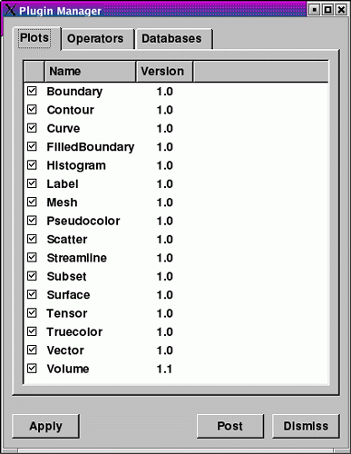

All of VisIt's plots, operators, and database readers are implemented as plugins that are loaded when VisIt first starts up. Some plugins are not likely to be used by most people so they should not be loaded. The Plugin Manager Window provides a mechanism that allows you to turn plugins on and off. The window has three tabs: Plots, Operators, and Databases. Each tab displays a list of plugins that can be loaded by VisIt. If a plugin is enabled, it has a check by its name.
|  |
| Figure 8 |
If you have used the Plugin Manager Window to disable certain plot and operator plugins, they will not appear in the Plot and Operator menus. You can enable the plot and operator plugins again the controls in the Plugin Manager Window.